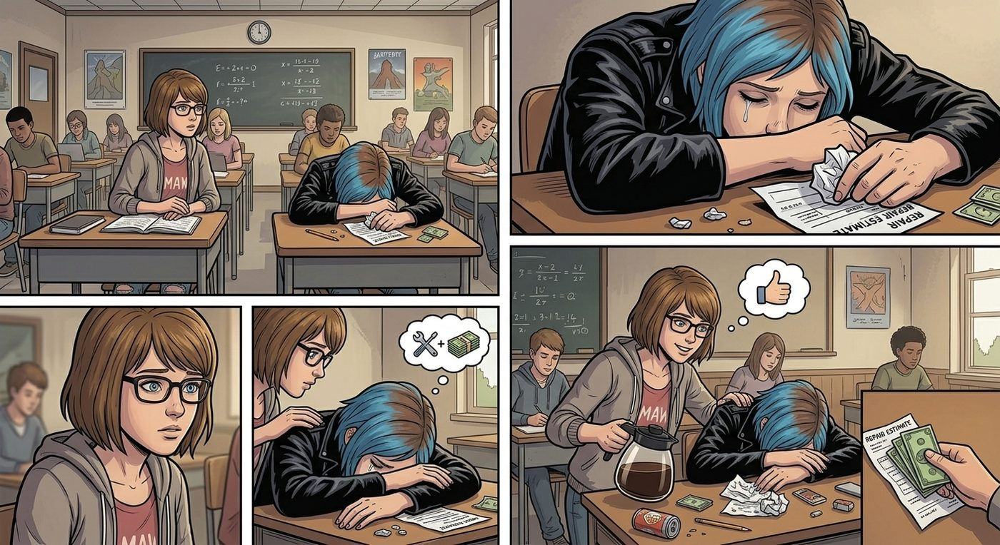

女僕咖啡雙鯨

一、債務
「這是什麼酷刑。」Chloe 整個人趴在教室書桌上,一臉生無可戀。
「怎麼了?」Max 湊過去。
「我爸,」Chloe 悶聲道,「說那輛皮卡的電瓶線和後續維修費,總共算下來一筆不小的數目。他說既然是我拉著大家去闖的禍,修車錢我自己想辦法出,要嘛存錢,要嘛去我媽餐廳多排幾班打工還債。」
「這聽起來合情合理啊。」Max 忍不住笑。
「合理個屁,」Chloe 哀嚎,「照我現在打工的排班速度,還完這筆錢我大概都要大學畢業了。」
「我可以幫妳一起分擔,」Max 認真地說,「反正我也——」
「已經算過了,」Chloe 打斷她,「就算妳貼一半,還是要拖上好一陣子。」她重重嘆了口氣,「這輩子第一次覺得,自己惹的禍終於要用勞動償還了。」
二、拉人下水
放學後,Warren 遠遠看到 Chloe 一臉「我需要人手」的表情朝自己走來,下意識加快了腳步想溜。
沒用。
「Warren Graham,」Chloe 一把揪住他的書包背帶,「你欠我一個人情,還記得嗎?廣播事件、AI 體育課,哪次不是我出頭?」
「我、我最近真的很忙——」
「一起去我媽餐廳打工,」Chloe 毫不留情地打斷他,「還債,順便賺點零用錢,不過分吧?」
Warren 掙扎了幾秒,最終還是敗下陣來。消息傳開,Brooke 出於「反正閒著也是閒著」的心態自願加入,Kenji 則是被 Chloe 一句「餐廳收銀系統老舊到堪比那間旅館的管理系統」成功勾起了技術宅的興趣,五個人就這樣稀里糊塗地湊成了雙鯨餐廳的臨時打工小隊。
三、女僕完全體
打工第一天,Max 提前到餐廳,神秘兮兮地拎著一個購物袋,把 Chloe 拉進後場更衣間。
「這次又是什麼?」Chloe 警惕地盯著那個袋子。
「靈感突發。」Max 眨眨眼,從袋子裡掏出一對毛茸茸的貓耳髮箍、一雙過膝條紋襪,還有一雙繫著小蝴蝶結的瑪麗珍鞋。
Chloe 瞪大眼睛:「不。」
「配上妳原本那條蕾絲圍裙,」Max 已經自顧自地把貓耳往她頭上一扣,退後兩步端詳,一臉滿意,「完美的女僕造型。」
「我要掐死妳。」Chloe 伸手就要撲過去。
「等等等等,」Max 敏捷地往旁邊一躲,舉起雙手求饒,「妳先聽聽 Brooke 怎麼說!」
正好路過的 Brooke 探頭進來,冷靜地打量了一眼 Chloe 頭上的貓耳,語氣認真得不像在開玩笑:「客觀來說,這的確是個噱頭賣點。餐廳的裝潢和菜單本來就走懷舊美式風,女僕主題咖啡廳的概念這幾年在年輕客群裡挺吃香的,拍照打卡的效果會很好。」
「我不信,」Chloe 死死抓著頭上的貓耳想扯下來,「這聽起來就是妳們合夥整我的藉口。」
「不是藉口,」Kenji 不知何時已經站在門口,手裡拿著平板,螢幕上是他熬夜整理出來的一份圖表,「我查了最近半年的餐飲業趨勢報告,主題化、社群媒體導流的獨立餐廳,平均營收比傳統業態高出不少,尤其是能製造話題效應的視覺設計。」他把平板轉過來給她看,「這是數據支持,不是玩笑。」
Chloe 看著那份一本正經、圖表齊全的分析報告,一時語塞。
「……妳們是認真的。」
「我們是認真的。」三人異口同聲。
Chloe 深吸一口氣,轉頭望向廚房那邊——Joyce 正好端著一盤剛出爐的瑪芬走出來,聽到動靜,饒有興致地打量了女兒頭上的貓耳一眼。
「媽,」Chloe 幾乎是抓著最後一根救命稻草,「妳說句話,這太離譜了吧?」
Joyce 想了兩秒,笑瞇瞇地開口:「只要生意好,媽媽都沒意見。」
Chloe 徹底沒了退路。
四、開張
於是那天下午,雙鯨餐廳的招牌下,多掛了一塊 Warren 手寫的小黑板,歪歪扭扭地寫著:「本週限定:女僕主題日」。
Chloe 和 Max 一身完整的女僕裝造型——蕾絲蝴蝶結圍裙、貓耳、條紋襪一應俱全——站在店門口招呼客人,雖然 Chloe 全程臉臭得像是隨時要揍人,但奇異地,這種「明明很不情願卻硬撐著服務」的反差萌,反而意外地受歡迎,店裡的客流量比平常翻了將近一倍。
Kenji 和 Brooke 窩在收銀台後方,合力把餐廳那台老舊到連 Joyce 自己都嫌棄的收銀系統,重新寫了一套簡易的點餐介面,連帶把庫存管理也順手優化了一遍。
Warren 則趴在角落那台故障已久的點唱機旁邊搗鼓了整個下午,滿手油污,終於在打烊前讓它重新哼出了走調卻依然熱鬧的老歌旋律,整間餐廳的氣氛瞬間活絡起來。
「這音樂,」Joyce 端著咖啡壺經過,驚喜地感嘆,「我都忘了它上次正常運作是什麼時候的事了。」
「舉手之勞。」Warren 得意地擦擦手上的油污,一臉與有榮焉。
五、辣度升級
被迫穿著女僕裝招呼一整天客人的 Chloe,積攢了滿肚子的鬱悶無處發洩,轉頭一頭鑽進廚房,抓起食材開始搗鼓她的「特色漢堡」。
這一次,她豁出去了——塔巴斯科辣醬的用量直接翻倍,又額外加了幾根切碎的哈瓦那辣椒,最後還撒了一整層現磨黑胡椒,做出了堪稱「地獄加強版」的牛肉餅。
正巧,在外面幫忙搬貨的 David 打完招呼進來休息,看到吧檯上擺著的成品,毫無防備地一口咬了下去。
三秒後,這位身經百戰的老兵臉色瞬間漲得通紅,眼淚毫無預警地飆出來,猛地灌下整整一大杯冰水,喉嚨裡發出撕心裂肺的咳嗽聲。
「咳咳——Chloe!」他聲音沙啞,「你這次是把整瓶辣醬倒進去了嗎?!」
Chloe 站在廚房門口,一身女僕裝配上此刻幸災樂禍的表情,顯得格外滑稽:「叫『地獄復仇者漢堡』,老兵。這次不用你付錢,算是我對今天所有委屈的報復。」
David 一邊咳一邊灌水,好不容易緩過氣,卻還是硬撐著把剩下的漢堡吃完,抹了把嘴,語氣硬邦邦地憋出一句評價:
「……確實比上次更有『進步』。」
Joyce 站在旁邊,看著女兒頭上還沒摘下的貓耳、David 漲紅著臉狼狽灌水的模樣,還有 Warren 那台重新響起的點唱機播放的懷舊金曲,忍不住笑得直不起腰。
「今天的雙鯨餐廳,」她一邊笑一邊搖頭,「大概是開業以來最熱鬧的一天了。」